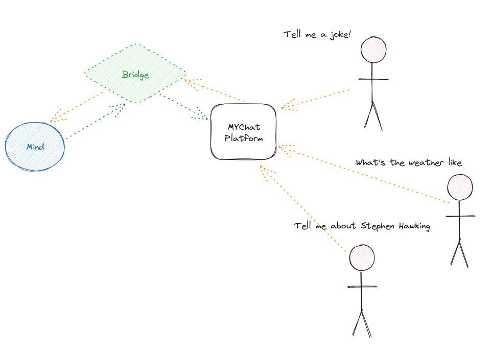
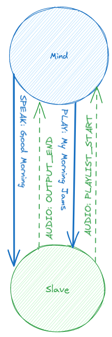
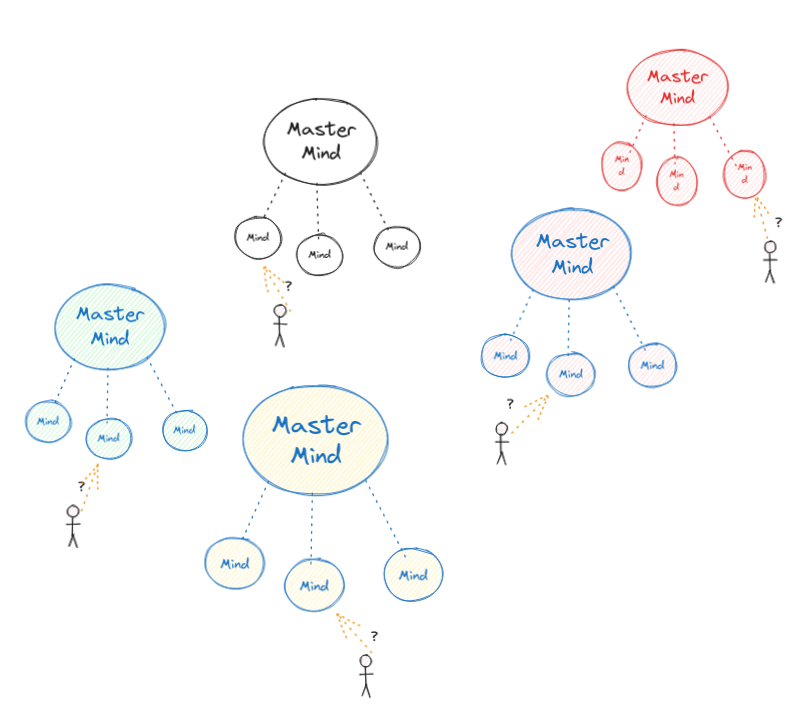

Terminology
Before we delve into the depths of the Hivemind Protocol, let's familiarize ourselves with some key terms used within the ecosystem:
- Node: A device or software client that is part of to the Hivemind network.

- Mind: A node that actively listens for connections and understands natural language commands. Minds communicate via BUS messages, authenticate other nodes, isolate connections, and authorize individual messages

-
Fakecroft: A mind that imitates ovos-core without actually running it. often only handles a subset of BUS messages, usually only
"speak"and"recognizer_loop:utterance" -
Terminal: A user-facing node that connects to a mind but doesn't accept connections itself.

- Bridge: A node that links an external service to a mind.

- Hive: A collection of interconnected nodes forming a collaborative network.

- Slave: A mind that connects to another mind and always accepts BUS messages from it.
 NOTE: A Terminal is like a Slave, but it is NOT a Mind
- Master Mind: The highest-level node in a hive that is not connected to any other nodes but receives connections from other nodes.

- The Collective: The collection of all Master Minds in the world
